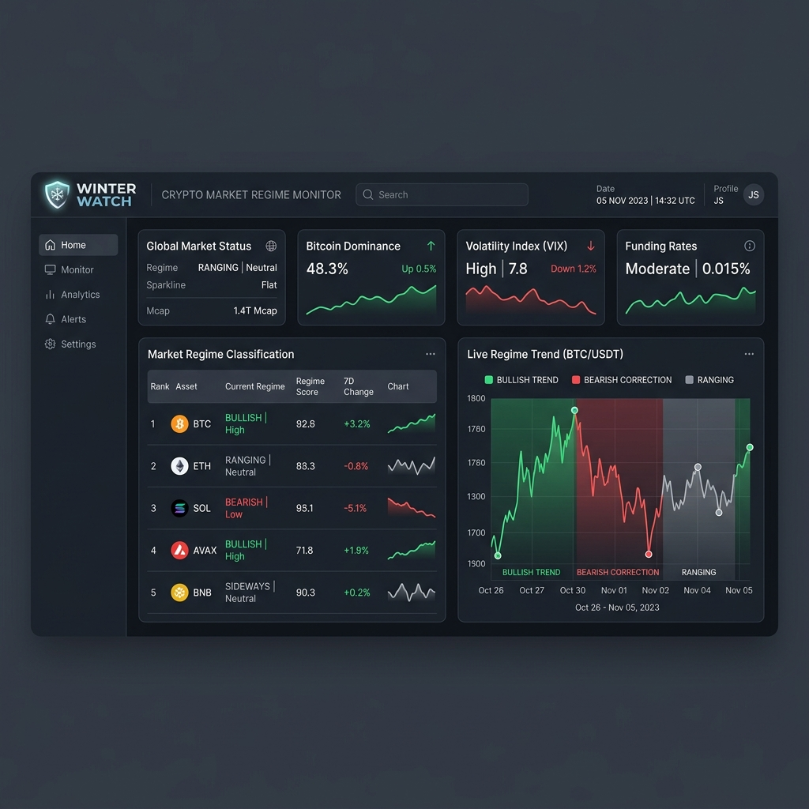
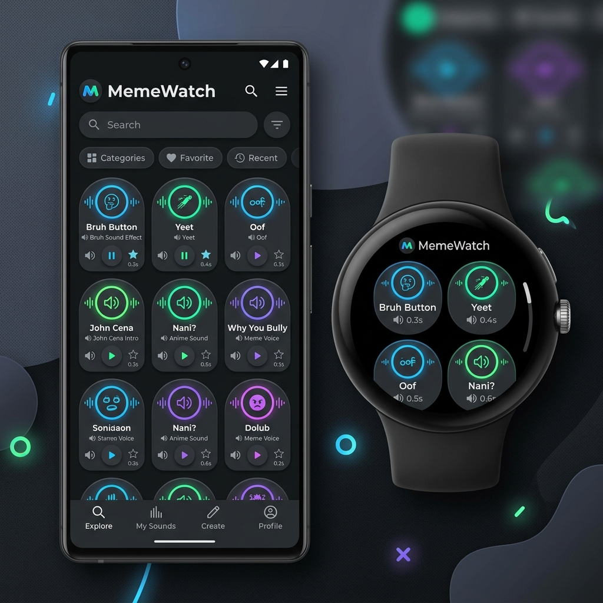
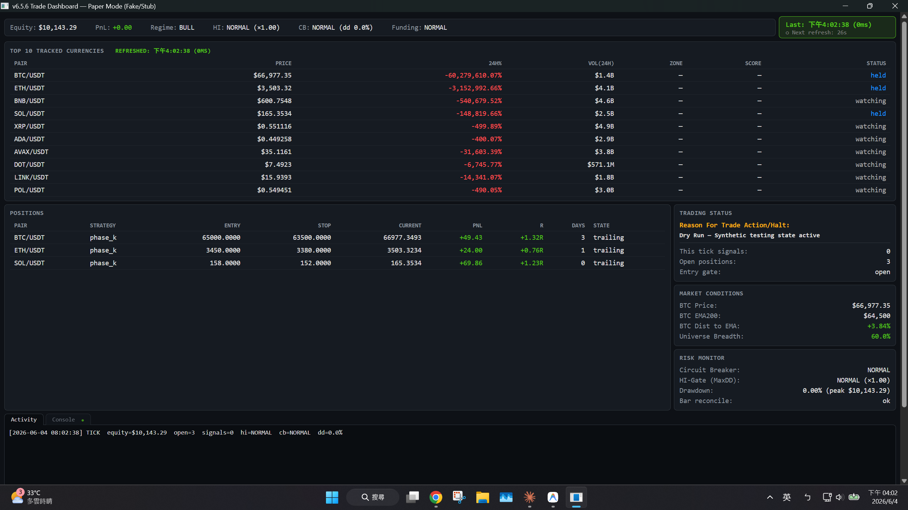
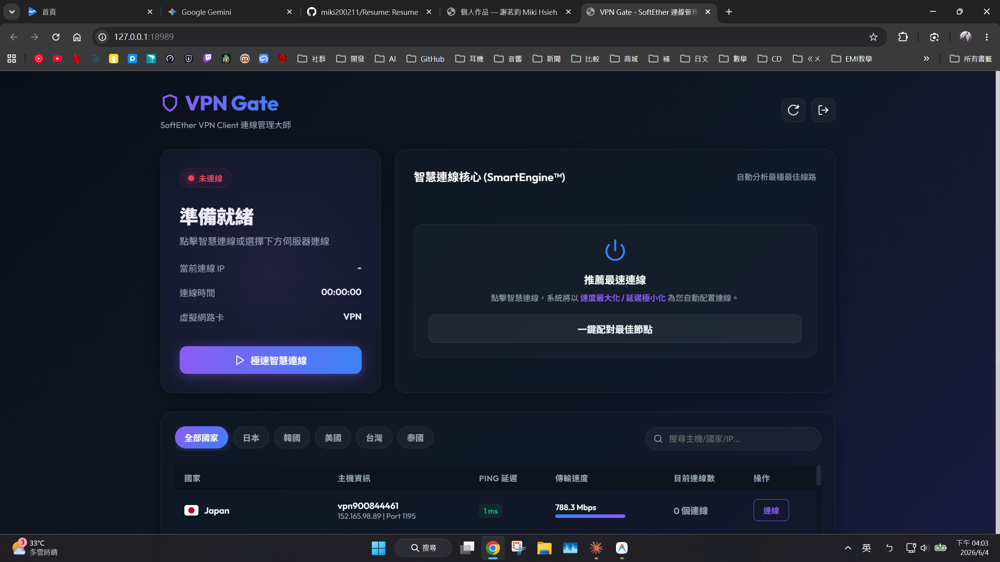
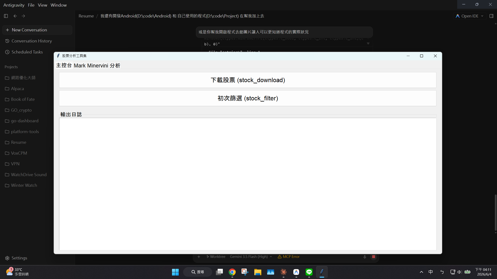
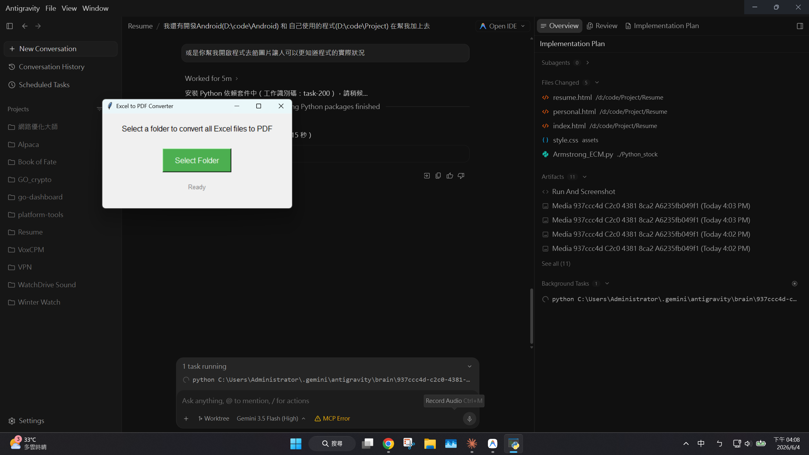

📊
量化監控
Kotlin
Winter Watch — 市場狀態監控器

市場狀態指標與 Sparkline 數據折線圖（示意圖）
為趨勢交易者設計的市場狀態監控器。透過 Binance 與 CoinGecko 公開 API（免金鑰）在 4h UTC 收盤更新 10 個量化指標（SMA200、Mayer Multiple、週 RSI 等），加權成 0–100 綜合分數與「Strategy Gate（開/關）」訊號；採 SWR 快取，啟動零延遲。基於 Kotlin、Jetpack Compose 與 Room。
Android (Kotlin / Compose / Room SQLite)
🔊
穿戴裝置
Kotlin
MemeWatch — 迷因語音板

手機與 Wear OS 手錶的迷因語音板介面（示意圖）
專為 Android 手機與 Wear OS 智慧手錶設計的迷因語音播放器，支援自訂上傳與預設音效。已整合 AdMob 廣告與 Google Play 帳務，並可打包為簽章 .aab 上架 Google Play。使用 Kotlin、Jetpack Compose for Wear OS 與 Room。
Android & Wear OS (Kotlin / Compose / sqlite)
📖
互動與 AI
Kotlin
Book of Fate — 互動命運之書
具備重力感應的互動式命運占卜書。使用者只需搖晃手機即可翻開書頁，並向基於 Gemini API 的後端服務發送詢問以獲得指引。使用 Kotlin 與 Jetpack Compose 打造。
Android (Kotlin / Compose / Gemini API)
⚡
網路工具
Kotlin
網路優化大師
網路狀態監控與最佳化工具。可自動測試多個 DNS 延遲並一鍵設定最佳 DNS，監控 4G/5G/Wi-Fi 延遲狀態，並支援 local DNS VPN 安全連線保護。基於 Kotlin 與 Android SDK。
Android (Kotlin / Android VPN / DNS APIs)
📈
量化交易
Go
crypto-dashboard — 加密貨幣量化交易儀表板

具備圖表、訊號與交易日誌的桌面 Wails 介面（實際截圖）
將約 3,994 行 Python 加密貨幣量化系統完整移植為 5,817 行 Go（含 803 行測試，go test 全綠）。以 Wails 取代 PyQt、goroutines＋sync.Mutex 處理並行、Parquet 分區快取、go-binance 對接 Binance；內建最大回撤硬上限與每月熔斷風控。
Desktop (Go / Wails / Parquet / Binance API)
→ 看系統架構與技術詳解
🛡️
系統工具
Go
VPN 快速連線工具

VPN 連線管理介面、伺服器清單與一鍵連線功能（實際截圖）
對接 VPNGate API 的 SoftEther VPN Client 連線工具。在背景執行 Go 伺服器並提供瀏覽器網頁介面，可自動偵測與建立虛擬網卡、獲取伺服器清單、依 Ping/速度計算品質評分並一鍵連線。
Desktop (Go / SoftEther vpncmd / Web GUI)
🔍
量化交易
Go
Alpaca — 美股量化交易系統

主控制台：包含股票下載、趨勢指標篩選與日誌輸出（實際截圖）
Go 打造的美股量化交易系統，以 Minervini Trend Template ＋ 橫斷面動能選股；透過「點對點成份股過濾」消除 look-ahead 與生存者偏差，支援全美股 8,114 檔回測（含蒙地卡羅壓力測試）與 Alpaca 實盤。由舊版約 31,000 行 Python 系統 F_4 演進、以 Go 重寫整合中。
Desktop (Go / Alpaca API / Backtest / Monte Carlo)
→ 看系統架構與技術詳解
📄
辦公自動化
Python
Excel 批次轉 PDF 工具

簡潔的資料夾選擇介面，一鍵批次轉換試算表（實際截圖）
實用 Tkinter 桌面小工具。呼叫 Win32 COM 介面自動操作 Excel 核心，一鍵將指定資料夾中所有的 Excel 活頁簿批次轉換為乾淨的 PDF 文件，避免排版跑版。
Desktop (Python / Tkinter / Win32 COM)
🌐
雙網分流
Go
AI_Web — 雙網路分流工具
網路介面卡自動分流工具。當電腦同時連接有線網路與 Wi-Fi 時，可自動將特定網址與應用程式引流至指定的網路介面（例如：有線網路連線 A 網路、Wi-Fi 連線 B 網路），實現雙網路並存與流量優化，無需安裝虛擬網卡或核心驅動。
Desktop (Go / NIC Binding / HTTP Proxy)